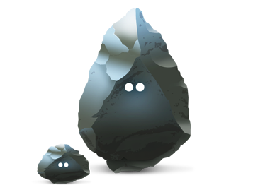

Silex

a low fat alternative
The inevitable self promotion...
|
So, Silex?
- A PHP 5.3+ micro framework
- Built using some components of Symfony
- Uses Pimple for dependency injection.
- Inspired by the Ruby framework Sinatra
- Created by Fabien Potencier, along with Igor Wiedler
- Backed by Sensio, the company behind Symfony
- MIT Licensed
- (Is that neckbeard approved or not? I forget...)
A micro what?
- But? but? Bigger is better right?
Wrong!
According to its website,
Silex is Concise, Extensible, Testable
Everything you need for building this:
Also, this:

So, PHP 5.3?
- TLDR; it's modern, it's good
- installable via composer
If you're not using at least PHP 5.3- If you're not using composer...
- If Sam has done his housekeeping...
you know where the door is.
So, Symfony components?
- At its heart, Silex uses 4 main Symfony components...
-
HttpFoundation: For Request and Response. - HttpKernel: Because we need a heart.
- Routing: For matching defined routes.
- EventDispatcher: For hooking into the HttpKernel.
-
Silex can also leverage many more using service providers
Twig, Form, Security, Swiftmailer, Monolog, Doctrine etc
So, Pimple?
- A simple dependency injection container
- Again, PHP 5.3+
- Super simple, single class
Silex extends Pimple
Good, huh?
So why is it good?
Silex, Hello World
Silex is installable via composer.
// composer.json
{
"require": {
"silex/silex": "~1.1"
}
}
Silex, Hello World
After installation, the simplest example is:
// index.php
require_once __DIR__.'/../vendor/autoload.php';
$app = new Silex\Application();
$app->get('/hello/{name}', function($name) use($app) {
return 'Hello '.$app->escape($name);
});
$app->run();
Where does the power come from?
- The dependency injection container
- and by extension of that, service providers
-
Service providers provide clean, abstracted ways to get access to things like:
The database- Your mailer
- Templating engine
- etc
An example
require_once __DIR__.'/../vendor/autoload.php';
$app = new Silex\Application();
$app->register(new Silex\Provider\DoctrineServiceProvider(), array(
'db.options' => array(
'driver' => 'pdo_sqlite',
'path' => __DIR__.'/app.db',
),
));
An example, cont'd
$app->get('/blog/{id}', function ($id) use ($app) {
$sql = "SELECT * FROM posts WHERE id = ?";
$post = $app['db']->fetchAssoc($sql, array((int) $id));
return "{$post['title']}
".
"{$post['body']}
";
});
Twig
$app->register(new Silex\Provider\TwigServiceProvider(), array(
'twig.path' => __DIR__.'/views',
));
$app->get('/hello/{name}', function ($name) use ($app) {
return $app['twig']->render('hello.twig', array(
'name' => $name,
));
});
But, I won't
Silex is great if:- You want something lean
- You're happy to make your own architecture decisions
- Really, it's just an option, like anything else.
No really, I won't
So if you wanna check out silex:
A great place to get started:
composer create-project fabpot/silex-skeleton silex